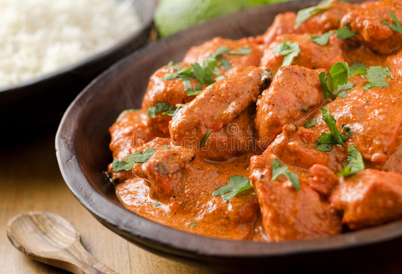

Butter Chicken

Description
Ingredients:
Marination:
- 1 lb. chicken
- 3/4 tbsp lemon juice
- 1/4 tsp salt
- 1/2 tsp red chili powder
- 3/4 tsp kasuri methi
- 1/ tsp turmeric
- 3/4 tsp garam masala
- 3/4 tbsp oil
- 1 tbsp ginger garlic paste
- 1/2 cup greek yogurt
Gravy:
- 2 tbsp butter
- 1 tsp ginger garlic paste
- 1 stick cinnamon
- 2 pods green cardamom
- 2 cloves
- 2 green chilis
- 4 large tomatoes
- 17 cashew nuts
- 1 tsp red chili powder
- 3/4 tsp garam masala
- 1/2 tbsp kasuri methi
- 1/4 tbsp sugar
- salt to taste
- 80-100 ml heavy cream
- 2 tbsp cilantro
Steps:
- First, marinate chicken with lemon juice, chili powder and salt for 20 minutes.
- Then marinate again with yogurt, kasuri methi, oil, turmeric, ginger garlic paste and garam masala.
- Cover and rest in refridgerator for 12-48 hours.
- Cook chicken in oven (240 C) or on the stove for 20-30 minutes, or until the chicken is cooked through and tender.
- To make the gravy, first add cashews and tomatoes to a blender jar. Make a smooth puree.
- Next, put butter in a pan and heat it. Then saute the cinnamon, cloves and cardamom for a minute.
- Add ginger garlic paste and green chilis, then fry until fragrant.
- Next, pour in the tomato cashew puree.
- Add red chili powder, sugar and salt.
- Mix and cook until the tomato puree thickens and leaves the sides of the pan.
- Pour in 1 cup of water. The amount of water used can be changed to reach the desired consistency.
- Bring to a boil and simmer for 3-5 minutes.
- Add the chicken and simmer for about 5 minutes.
- Add garam masala and kasuri methi.
- Stir and simmer for 2-3 minutes, then pour cold heavy cream and turn the stove off.
- Garnish the butter chicken with cilantro and extra cream.
- Serve with rice, naan or paratha.